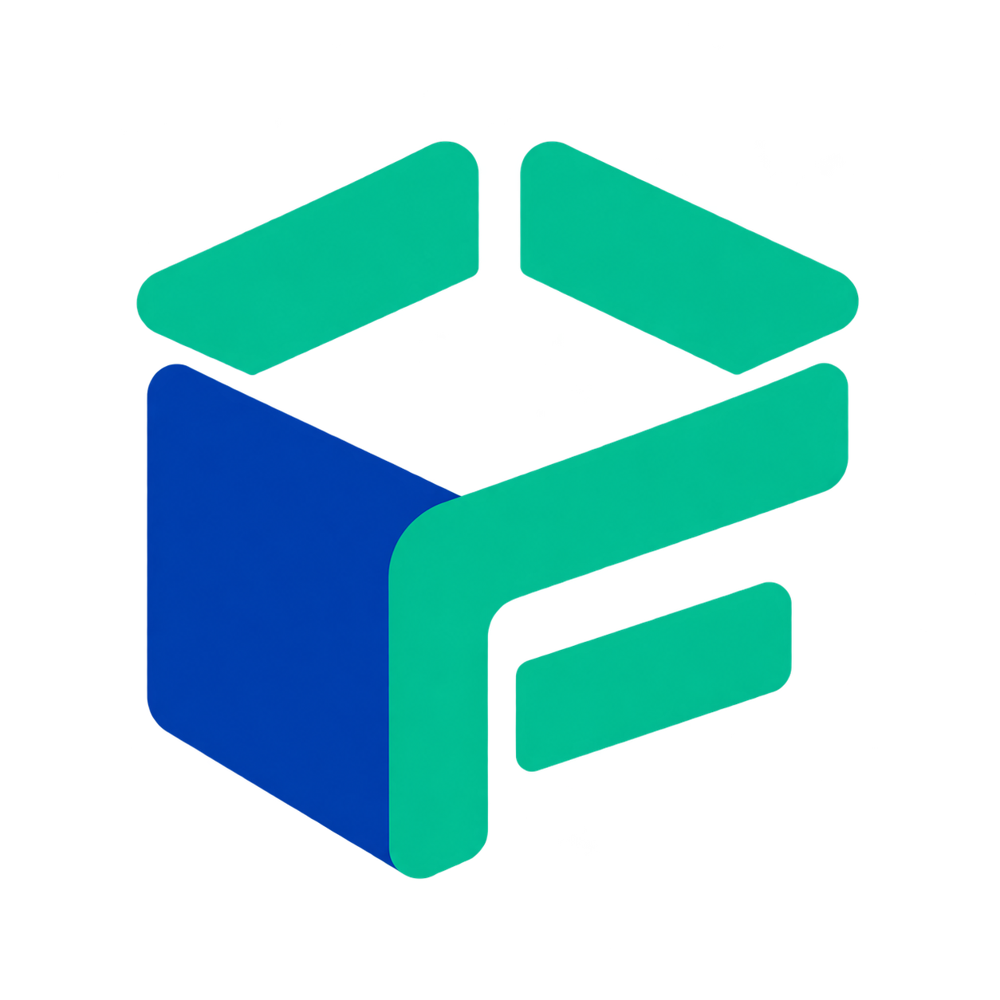

<!doctype html><html lang="zh-Hans"><meta charset="utf-8"><title>Fabo · 本地开发，从容有序</title><style>body{margin:0}*{box-sizing:border-box}.piece{font-family:-apple-system,'PingFang SC',sans-serif;color:#182932;width:1920px;height:1080px;background:#f4f7f8;position:relative}.eyebrow{font-size:24px;letter-spacing:5px;color:#42716c}.title{font-size:90px;letter-spacing:-4px;line-height:1.24;font-weight:650;margin:26px 0}.sub{font-size:31px;color:#62727a;line-height:1.7}.screen{border-radius:20px;box-shadow:0 30px 90px #163e4026;border:1px solid #dce5e8}.capture [data-om-starter]>div:last-child{display:none!important}.capture svg[data-om-exportable-video-with-duration-secs]{transform:none!important;box-shadow:none!important}.capture [data-om-starter]{background:#f4f7f8!important}</style><div id="root"></div>
<script src="vendor/react.js"></script><script src="vendor/react-dom.js"></script><script src="vendor/babel.js"></script>
<script>window.OM_SCENES = '[{"name":"Opening","dur":2,"desc":"Opening 功能镜头"},{"name":"Speed","dur":4,"desc":"Speed 功能镜头"},{"name":"Containers","dur":3,"desc":"Containers 功能镜头"},{"name":"Compose","dur":3,"desc":"Compose 功能镜头"},{"name":"Resources","dur":2,"desc":"Resources 功能镜头"},{"name":"Logs","dur":2,"desc":"Logs 功能镜头"},{"name":"Terminal","dur":2,"desc":"Terminal 功能镜头"},{"name":"Kubernetes","dur":3,"desc":"Kubernetes 功能镜头"},{"name":"Machine","dur":3,"desc":"Machine 功能镜头"},{"name":"Workflow","dur":3,"desc":"Workflow 功能镜头"},{"name":"Closing","dur":3,"desc":"Closing 功能镜头"}]';window.OM_PLAYBACK = '{"mode":"times","count":1}';const TWEAK_DEFAULTS = /*EDITMODE-BEGIN*/{"motionEditor":true}/*EDITMODE-END*/;if(location.search.includes('capture'))document.documentElement.classList.add('capture');</script>
<script type="text/babel" src="vendor/animations-v3.jsx"></script><script type="text/babel" src="vendor/tweaks-panel.jsx"></script><script type="text/babel">
const MOTION={enter:(t,a,d=1)=>Easing.easeOutCubic(Math.max(0,Math.min(1,(t-a)/d))),draw:(t,a,d)=>Math.max(0,Math.min(1,(t-a)/d)),pop:(t,a,d=1)=>Easing.easeInOutCubic(Math.max(0,Math.min(1,(t-a)/d)))};
const chapters=[
['Opening','Speed','本地开发，进入状态。','Fabo · macOS 容器工作台'],
['Speed','Containers','本地容器，随时启动。','创建 · 启动 · 执行 · 清理'],
['Containers','Compose','容器状态，一眼掌握。','启停 · 资源占用 · 项目分组'],
['Compose','Resources','一组服务，一起管理。','Compose 项目 · API / Cache / Web'],
['Resources','Logs','资源管理，集中处理。','镜像分层与扫描 · 网络 · 数据卷'],
['Logs','Terminal','日志持续更新。','实时追踪 · 关键字查找 · 级别筛选'],
['Terminal','Kubernetes','终端，直接进入。','交互式 TTY · 连续输入 · 会话保留'],
['Kubernetes','Machine','Kubernetes，就在本地。','k3s 集群 · Pods · Services · Pod 日志'],
['Machine','Workflow','Linux 环境，随手创建。','创建开发环境 · 进入 Shell · 共享宿主文件'],
['Workflow','Closing','熟悉的工具，继续用。','Docker CLI · Compose · Buildx'],
['Closing',null,'Fabo','本地开发，从容有序。']];
function Piece(){const {T,CUES}=useComposition();const tl=useTimeline();React.useEffect(()=>{window.__animStage={duration:30,setTime:tl.setTime,setPlaying:tl.setPlaying}},[tl]);return <div className="piece">
{chapters.map(([name,next,title,sub],i)=>{const start=CUES[name],end=next?CUES[next]:30.1;const p=MOTION.enter(T,start,.22),drift=MOTION.draw(T,start,end-start);const pic={Containers:'fabo-window',Compose:'fabo-window',Logs:'logs',Terminal:'terminal',Kubernetes:'kubernetes'}[name];return <Shot key={name} from={start} to={end}><div style={{position:'absolute',inset:0,background:i%3===1?'#e6f4ef':'#f4f7f8'}}>
<div style={{position:'absolute',left:90,top:55,display:'flex',alignItems:'center',gap:14,fontSize:29,fontWeight:650}}>Fabo</div><div style={{position:'absolute',right:90,top:66,color:'#536b72',fontSize:23}}>{String(i+1).padStart(2,'0')} / 11</div>
<div style={{position:'absolute',left:100,top:name==='Opening'?360:155,opacity:p,transform:`translateY(${24*(1-p)}px)`}}><div style={{fontSize:23,letterSpacing:4,color:'#007d69',marginBottom:20}}>{name==='Opening'?'少一点等待，多一点创造。':'LOCAL DEVELOPMENT / FABO'}</div><h1 className="title" style={{fontSize:name==='Opening'?94:66,margin:'0 0 18px'}}>{title}</h1><div className="sub" style={{fontSize:30}}>{sub}</div></div>
{pic&&<div style={{position:'absolute',left:200,top:350,width:1520,height:650,overflow:'hidden',borderRadius:18,boxShadow:'0 25px 60px #143c4020',transform:`translateX(${60*(1-p)}px) scale(${1+.04*drift})`,transformOrigin:'center top'}}></div>}
{name==='Opening'&&}
{name==='Speed'&&<><div style={{position:'absolute',left:100,top:440,width:1720,padding:'50px 55px',background:'#183b3b',borderRadius:18,fontFamily:'Menlo,monospace',fontSize:43,color:'#effaf6'}}><span style={{color:'#63dfba'}}>$ </span>fabo run --rm alpine echo hello</div><div style={{position:'absolute',left:110,top:650,fontSize:64,color:'#007d69',opacity:MOTION.enter(T,start+.5,.2)}}>hello</div><div style={{position:'absolute',left:110,top:820,fontSize:28,color:'#536b72'}}>命令用法示意 · 非启动计时</div></>}
{name==='Resources'&&<div style={{position:'absolute',left:100,right:100,top:440,display:'flex',gap:30}}>{[['Images','镜像分层 / 扫描'],['Networks','容器网络'],['Volumes','持久化数据']].map(([h,v],j)=><div key={h} style={{flex:1,padding:'60px 40px',background:'#fff',borderTop:'6px solid #00a98e',transform:`translateY(${45*(1-MOTION.enter(T,start+j*.14,.3))}px)`,opacity:MOTION.enter(T,start+j*.14,.3)}}><div style={{fontSize:44,fontWeight:650,marginBottom:25}}>{h}</div><div style={{fontSize:30,color:'#536b72'}}>{v}</div></div>)}</div>}
{(name==='Machine'||name==='Workflow')&&<div style={{position:'absolute',left:100,top:425,width:1720,padding:'46px 55px',background:'#183b3b',borderRadius:18,color:'#effaf6',fontFamily:'Menlo,monospace',fontSize:37,lineHeight:2.3}}>{(name==='Machine'?['fabo machine create dev --distro ubuntu','fabo machine shell dev']:['fabo ps','fabo compose up -d','fabo buildx build .']).map((cmd,j)=><div key={cmd} style={{opacity:MOTION.enter(T,start+.15+j*.35,.2)}}><span style={{color:'#63dfba'}}>$ </span>{cmd}</div>)}</div>}
{name==='Closing'&&<><div style={{position:'absolute',left:0,right:0,top:680,textAlign:'center',fontSize:52,fontWeight:600}}>启动 · 管理 · 构建 · 调试</div><div style={{position:'absolute',left:0,right:0,top:780,textAlign:'center',fontSize:30,color:'#536b72'}}>macOS 本地容器引擎与桌面管理工具</div></>}
<div style={{position:'absolute',left:100,right:100,bottom:42,display:'flex',gap:8}}>{chapters.map((x,j)=><div key={j} style={{height:5,flex:1,background:j<=i?'#009c7f':'#d9e3e5'}}/>)}</div></div></Shot>})}</div>}
function App(){const[t,set]=useTweaks(TWEAK_DEFAULTS);return <><CompositionStage width={1920} height={1080} scenes={window.OM_SCENES} playback={window.OM_PLAYBACK}><Piece/></CompositionStage>{!location.search.includes('capture')&&<TweaksPanel><TweakToggle label="Motion editor" value={t.motionEditor} onChange={v=>set('motionEditor',v)}/></TweaksPanel>}</>};ReactDOM.createRoot(document.getElementById('root')).render(<App/>);
</script></html>
